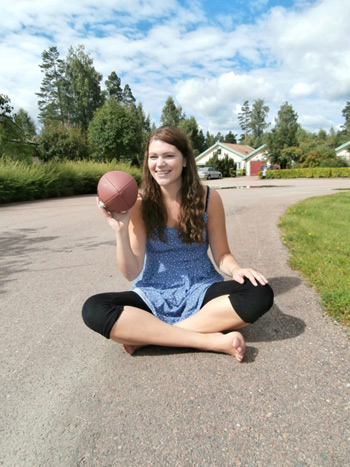

Min första presentation
Hej!
Det är jag som är Maria Nygren. Jag bor för tillfället i Liverpool i England, medans min familj (mor, far och lillasyster) håller hus hemma i Sverige.
Jag skulle inte säga att jag har programmerat innan. Jag har visserligen läst två kurser i hmtl och css, men bara nosat på javascript.
Det som fick mig att söka denna utbildning är mitt intresse för att lära mig hur saker fungerar. Vill gärna utforska mer vad som händer bakom den visuella delen.
Jag är bra på att leta upp givande information och ta tag i att lära mig nya saker. Är inte rädd för att prova något nytt även om det verkar svårt eller skrämmande i början. Jag är mindre bra på att lägga fokus på en enda grej i taget, jag vill göra allt på en och samma gång för jag tycker det finns så många roliga saker att lära sig.
Jag jobbar deltid på disans med att göra annonser. Detta är något som jag har gjort i snart 6 år, så jag känner att det är dags att börja utforska andra områden och möjligheter.
Tidigare utbildning / kurser jag läst
- John Bauer Gymnasiet IT-Media (avgångsår 2007)
- Luleå tekniska universitet
- Webbdesign- Flash
- Mittuniversitet
- Ljudproduktion / Tekniskt ljudskapande
- Högskolan i Jönköping
- Videoredigering i After Effects
- Högskolan väst
- Vektorgrafik och animation
- Linnéuniversitet
- Bruksspel i gitarr, 1, 2 och 3
- Bruksspel i piano, 1 och 2
- Praktisk harmonilära
- Bild och grafisk design för webben
- Låtinspelning med digitala verktyg
- Umeå universitet
- CSS-baserad webbdesign
- Uppsala universitet
- Allmän musiklära
- Musikteori 1
Intressen
- Spela gitarr
- Jag gillar att lära mig jazz-ackord och riffs
- Spela piano
- Tillmestadels filmmusik
- Lära mig nya saker
- Allt mellan himmel och jord, men oftast inom musik och grafisk design
- Se på bra serier
- Tycker att det är viktigt att koppla av emellanåt och då blir det oftast något kort men roligt. Ex. It-Crowd